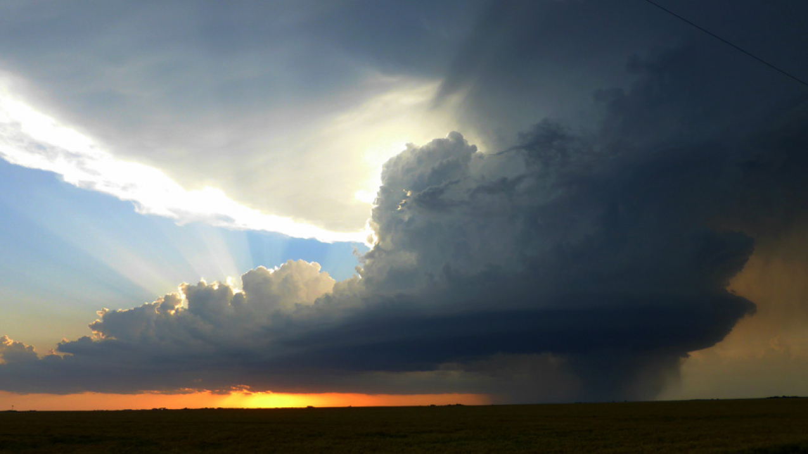
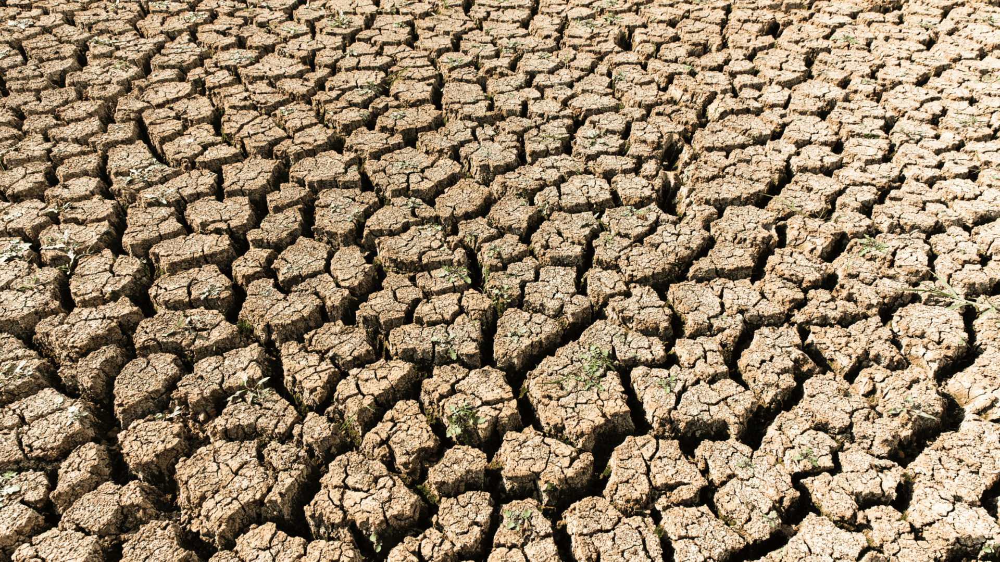

Hotter temperatures
Nearly all land areas are seeing more hot days and heat waves; 2020 was one of the hottest years on record. Higher temperatures increase heat-related illnesses and can make it more difficult to work and move around. Wildfires start more easily and spread more rapidly when conditions are hotter.


More severe storms
Changes in temperature cause changes in rainfall. This results in more severe and frequent storms. They cause flooding and landslides, destroying homes and communities, and costing billions of dollars.

Increased drought, Lack of Food
Water is becoming scarcer in more regions. Droughts can stir destructive sand and dust storms that can move billions of tons of sand across continents. Deserts are expanding, reducing land for growing food. Many people now face the threat of not having enough water on a regular basis. Changes in climate and increases in extreme weather events are among the reasons behind a global rise in hunger and poor nutrition. Fisheries, crops, and livestock may be destroyed or become less productive. Heat stress can diminish water and grasslands for grazing.

Warming, rising ocean
The ocean soaks up most of the heat from global warming. This melts ice sheets and raises sea levels, threatening coastal and island communities. The ocean also absorbs carbon dioxide, keeping it from the atmosphere. More carbon dioxide makes the ocean more acidic, which endangers marine life.


Loss of species
Climate change poses risks to the survival of species on land and in the ocean. These risks increase as temperatures climb. Forest fires, extreme weather, and invasive pests and diseases are among many threats. Some species will be able to relocate and survive, but others will not.

More health risks
Changing weather patterns are expanding diseases such as malaria. Extreme weather events increase disease and death, and make it difficult for health care systems to keep up. Other risks to health include increased hunger and poor nutrition in places where people cannot grow or find sufficient food.

Poverty and displacement
Climate change increases the factors that put and keep people in poverty. Floods may sweep away urban slums, destroying homes and livelihoods. Heat can make it difficult to work in outdoor jobs. Weather-related disasters displace 23 million people a year, leaving many more vulnerable to poverty.